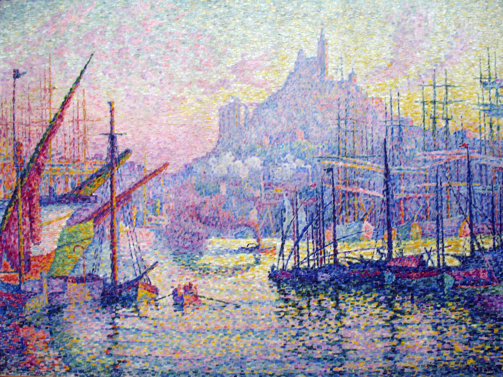

A Harbour, Made of Light
Masts measure the sky. Small strokes return colour to the water.

Paul Signac · 1905–1906 · Oil on canvas
Object file | Documented facts
Paul Signac, French, 1863–1935. Painted in 1905–1906; oil on canvas, 88.9 × 116.2 cm; accession 55.220.1. The collection record places its execution in the studio after a late-1905 visit to Marseille. The hill is crowned by Notre-Dame de la Garde. [1]
Composition | A passage through density
Start with the dark hulls at lower right. They anchor the picture before the eye follows the left-hand diagonals towards the centre. Masts crowd both sides, yet leave an opening: pale water narrowing into the distance. The hill and church, just right of centre, receive the upward movement. Dense foreground marks loosen in the distance. Beneath the many small strokes sits a remarkably legible structure.
Colour | Warmth threaded through blue
Blue, violet and blue-green provide the cool framework; yellow and peach-orange interrupt it. On a traditional painters’ colour wheel, blue–orange and violet–yellow create local near-complementary contrasts. Neighbouring hues soften the transitions. Yellow crosses from sky into water; violet travels from shadow into the distant hill. Warm and cool are woven together rather than assigned separate territories. A pale yellow beside deep blue seems especially luminous: hue contrast works alongside a difference in lightness.
Light | Shadows keep their colour
Form depends less on continuous grey shading than on an arrangement of light and dark colour. The hulls establish weight; the pale sky opens space above them. Soft hill edges recede behind the sharper masts. Short horizontal marks break the reflections, giving the boats solidity while allowing the water to loosen their outlines. The whole image feels radiant, although its individual zones differ greatly in brightness.
Technique and artist | Let distance do some work
The collection record compares the separate rectangular strokes to mosaic tesserae. [1] A major Neo-Impressionist, Signac developed increasingly mosaic-like colour surfaces in his mature work. [2] Up close, pigment asserts itself; step back and harbour, water and sky reconnect. Optical mixing describes part of this experience, but does not mean every neighbouring hue fuses into a uniform new colour. The gaps remain perceptible. We see a place and a worked surface at once.
Why it moves | A crowded world can still be calm
For me, the emotional centre is that pale stretch of water left open between the masts. The picture makes room without emptying the harbour. Boats, lines and colours accumulate, yet the eye finds somewhere to rest. It feels especially welcome on a busy October morning: a small clearing of light inside a full world. This is a personal response, not a claim about the artist’s intentions.
Try it | A cool field, a little warmth
For a poster, journal or outfit, try blue-violet #485A92 at 60%, pale paper #F4F0E8 at 30%, and warm yellow #E6BB55 at 10%. Keep warmth concentrated at a small focal point, with variations of lightness in the cool field. If it feels restless, reduce the warm area before reducing saturation. For composition, cluster verticals along both edges and reserve a pale central passage around one-quarter of the width. These are suggested design proportions and colours, not measured pigments or the artist’s formula.